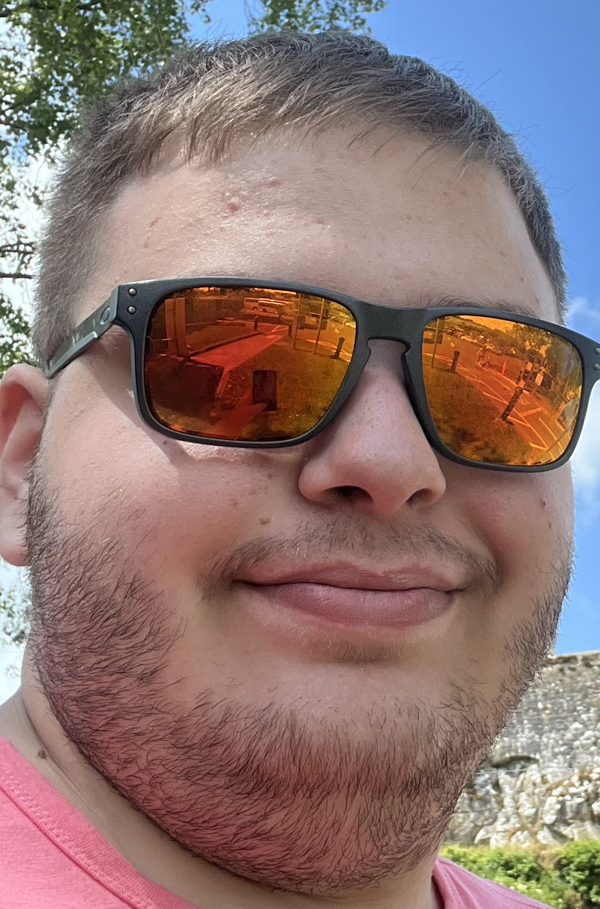

About Me
Im Jack Poundstone, although you probably already knew that from the large page headers. I would consider myself a sound designer who's path has lead to me learning a plethora of other media creation related skills. Even if most are related to making video games. I was born in Urbana Il, Oct 16 2001. And grew up nearby in the sleepy town of Monticello. I am a soon to be a 2025 graduate of ISU with a bachelors in Game Design.